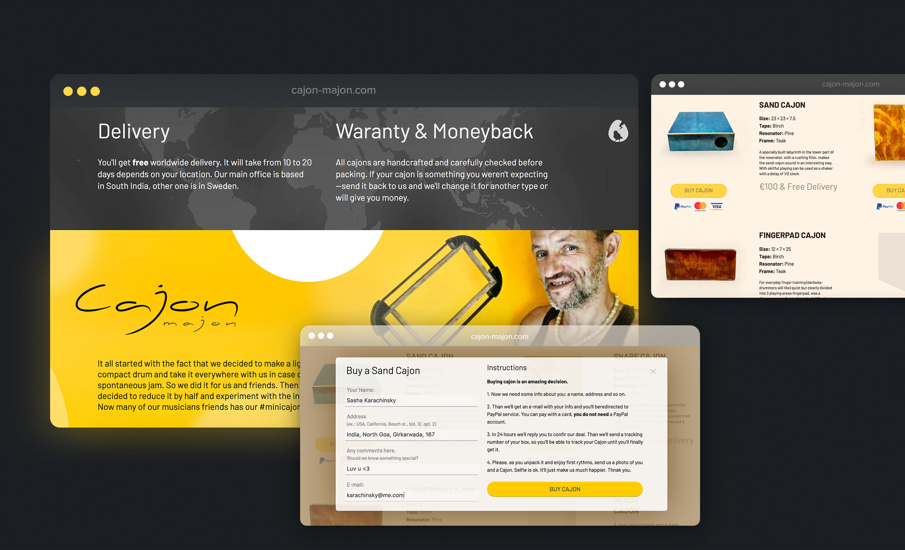
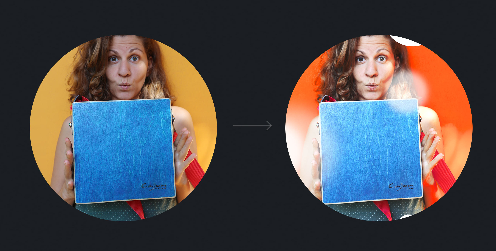
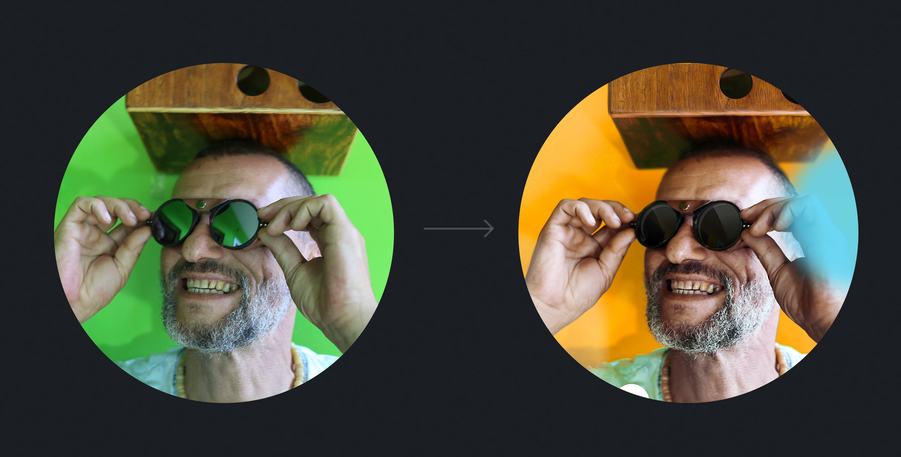
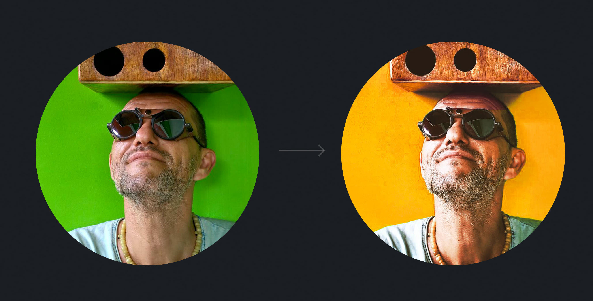
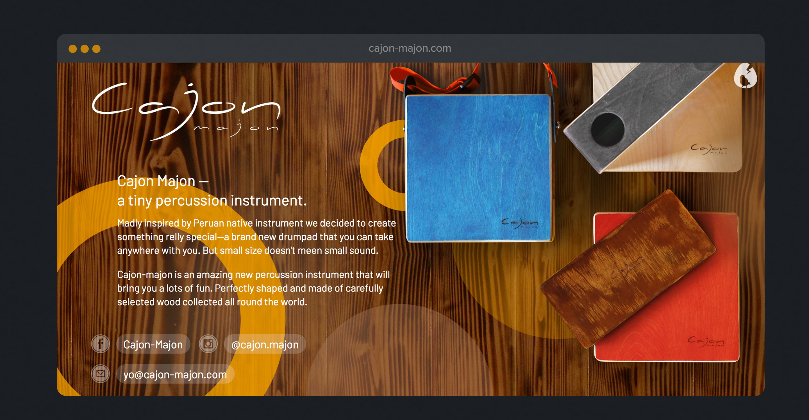

Что сделано:
Cайт, промо-картинки, рекламное видео, музыка
Карина и Артур — мои давние друзья, мы уже который год проводим зиму вместе в Индии. И вот осенью 2017-го ребята решили запустить производство кахонов — таких маленьких деревянных барабанов родом из Перу.
На 15-ом сделанном кахоне стало ясно, что увлечение переросло в нечто большее.
Так в формате совместного творчества родился бренд, а за ним и рекламный ролик (снятый на балконе!), музыка и сайт.
Сначала про сайт
Мы все сами играем на разных инструментах и знаем о том, чего хотят музыканты. Это основной посыл. Кроме прочего, мы решили, что вместо безликого интернет-магазина можно сделать яркий и живой сайт. А наши фотографии сделают бренд дружелюбным и повысят доверие: мы все — обычные люди, ведем активно социальные сети (на которые повсюду ссылки) и относимся к своему делу как к очень интересному времяприровождению под пальмами и палящим солнцем Индии.
В результате получился яркий лендинг (пока только на английском):

Мини-витрина с серийными моделями кахонов.
Тут же всё про гарантию и бесплатную доставку по всему миру.

Фотосессия
Кахон-Махон начал набирать обороты осенью 2017, когда мы вновь собрались в Индии. Карина везла из Москвы латунное клеймо с логотипом, чтобы наносить лого на кахоны, а Артур тем временем вез из Стокгольма разные сорта дерева и инструменты. Через некоторое время расцвел инстаграм и фейсбук Кахон-Махона и пришло время делать имиджевые снимки.
Стоит сказать, что тут, в Индии, весьма кстати, все дома выкрашены в невероятно яркие цвета, так что с фонами вопрос решился сам собой.




Дополнительный логотип
К уже имеющемуся логотипу-надписи мы решили добавить узнаваемый знак. Этот логотип — результат совместной работы с дизайнером Кариной Романовой.
Кахоны своей формой и из-за отверстия напоминают скворечники. Отсюда птичка. По испански cojones — яйца. Ну и молния-трещина как символ громкого звука наших кахонов.
Видео
В условиях отсутствия студии было особенно интересно получить насыщенную картинку. Мы закупили тряпичные фоны, пригласили друзей (и даже соседей), дождались подходящего солнца и за несколько часов сняли промо.
Конечно, отдельным удовольствие было написать музыку: в рекламе звучат те самые кахоны, которые делают ребята, укулеле Карины и индийская флейта.
В последний момент
Мы решили сделать новую картинку на главный экран, чтобы добавить уюта.
